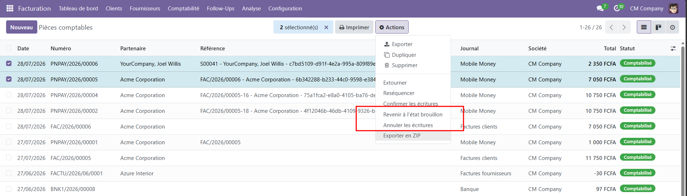

Batch draft & cancel journal entries in one click
Accountants often need to reset or cancel several journal entries (invoices, bills, miscellaneous entries) at once — for example when cleaning up a wrong import or reverting a batch of documents. Doing this one record at a time through the standard Odoo buttons is slow and repetitive.
Account Move Batch Cancel adds two actions to the Accounting journal entries list view so you can select multiple entries and process them all at once, directly from the list.

The batch actions follow the same access rights as journal entries and are available to users in the Accounting / Invoicing: Manager group.
Odoo 18.0 — Community & Enterprise.
Developed and maintained by Parfait BENE